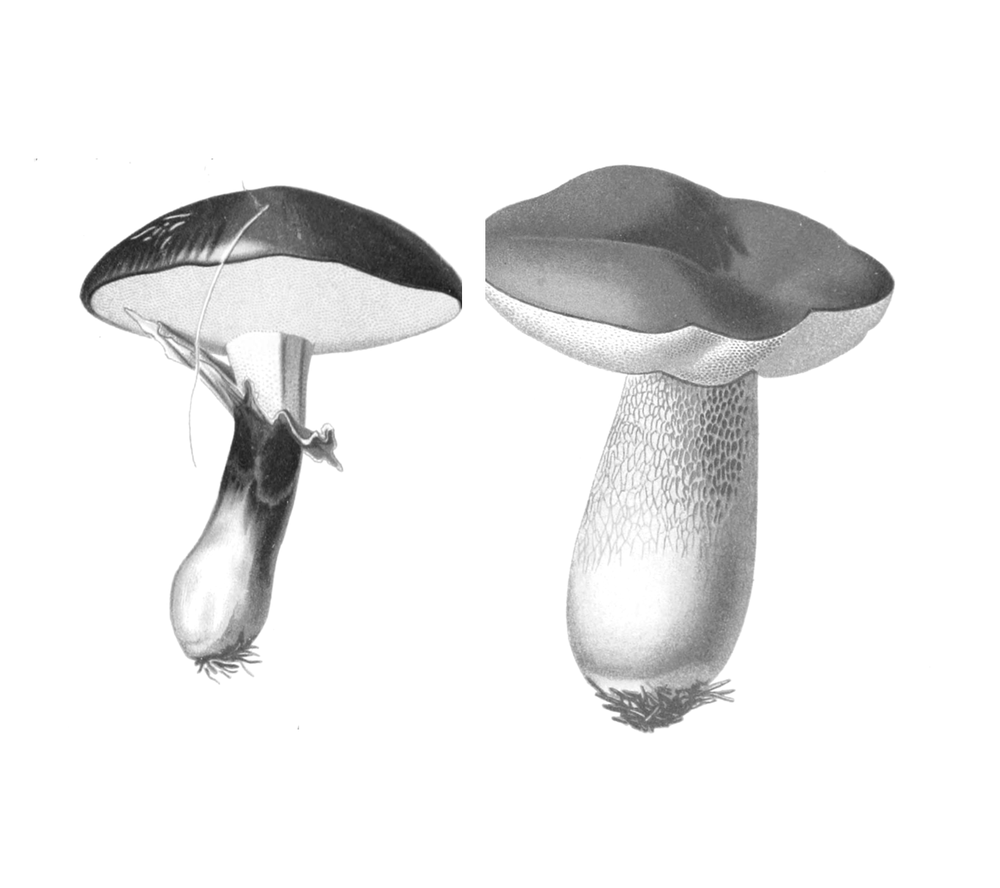
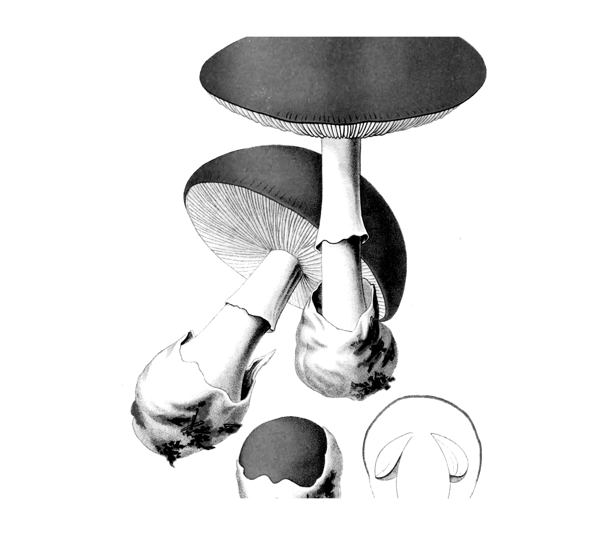
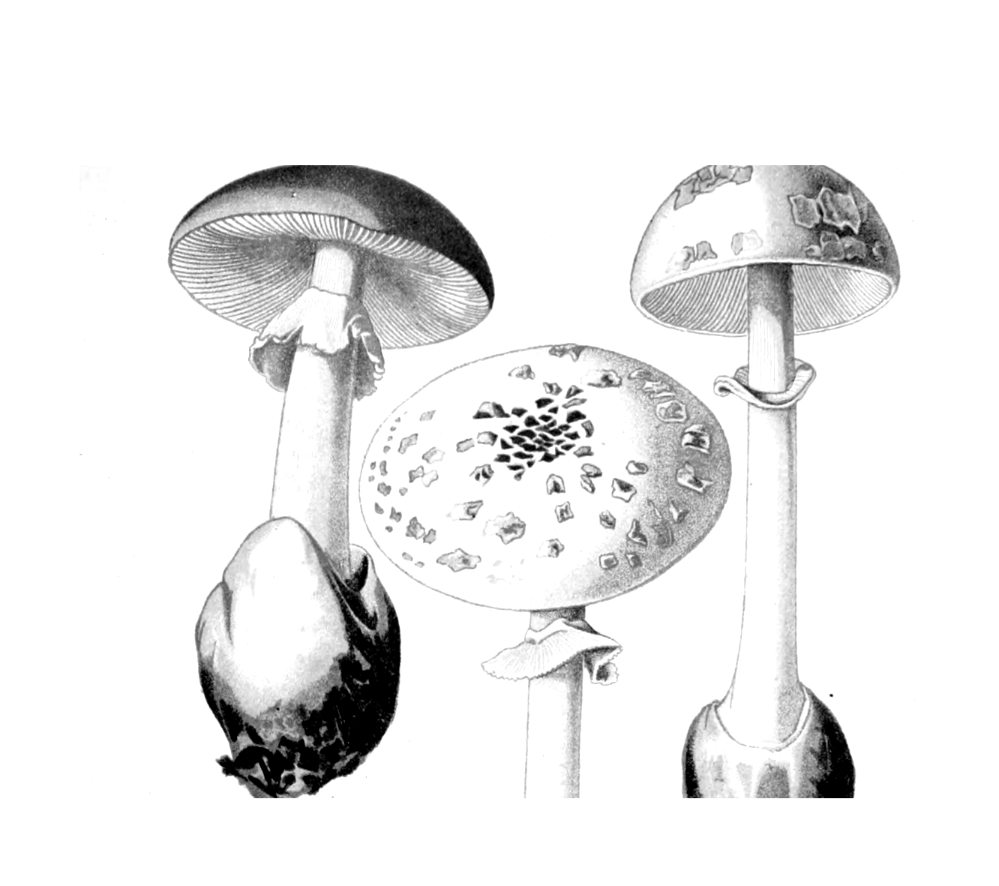
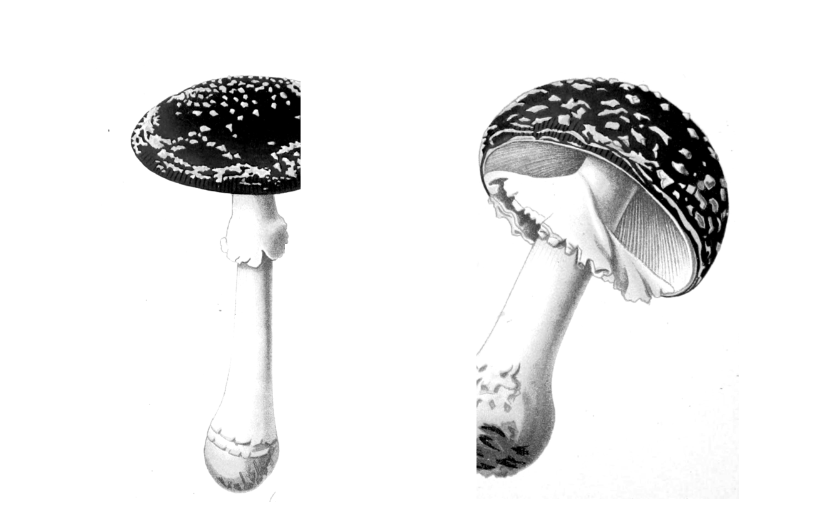
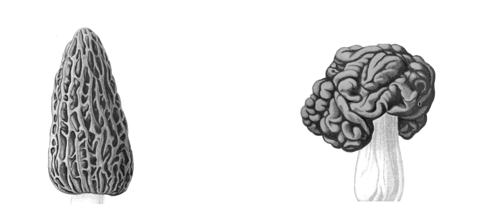
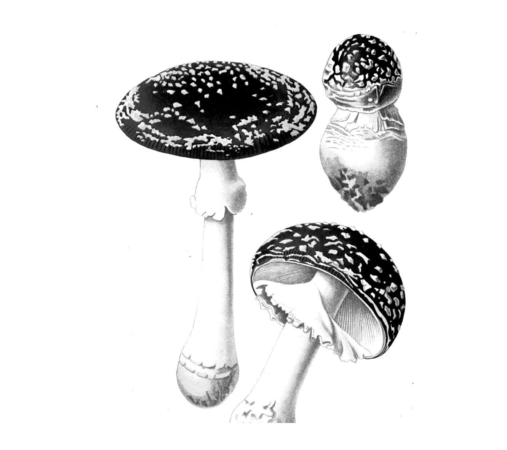

Safety-first field guide
Poisonous Mushrooms
Recognize risk, document the whole specimen, and act quickly after a possible exposure.
Direct answer
You cannot identify every poisonous mushroom by a shortcut
Safe identification is a species-level conclusion built from multiple features, location, habitat, maturity, and expert comparison. A color, photo, app result, spore print, folk test, or symptom clock cannot certify edibility.[S01][S06][S11]
Possible ingestion in the United States
1-800-222-1222
Call Poison Help immediately. Do not wait for symptoms and do not induce vomiting. For collapse, seizure, trouble breathing, or inability to awaken, call 911.[S03][S04]
Help you recognize stop patterns and collect evidence for an expert.
Declare a wild mushroom edible or replace a poison centre, clinician, or mycologist.
Do not eat a wild mushroom unless a qualified local expert has established its identity.
Navigation
Contents
- 01Draw the safety boundary1
- 02Build an evidence packet4
- 03Recognize high-risk patterns7
- 04Treat time as a triage signal11
- ANotes and sources15
- IIndex of terms17
Chapter 01
Draw the Safety Boundary
Identification is a chain of evidence. Edibility is a separate decision with a much higher cost of error.

1.1 Know what an identification does
A mushroom name is a hypothesis until all important features agree with a reliable, regional description and plausible lookalikes have been excluded. For nonexperts, there is no dependable rule that separates every poisonous species from every nonpoisonous species.[S01][S06]
- Observation
- Cap, underside, stem, intact base, bruising, odor, substrate, habitat, season, and grouping.
- Candidate ID
- A species or group that currently fits the evidence. It is not an eating decision.
- Exclusion work
- Compare every dangerous lookalike, including immature, damaged, and regional forms.
- Edibility decision
- Requires species certainty, local expertise, condition, preparation knowledge, and individual risk review.
Do not reverse the logic
A warning pattern can justify avoidance. Its absence cannot prove safety. A mushroom without a visible ring may still be dangerous; a buried base may hide a volva; cap color and veil remnants can change with age or weather.[S07][S08]
Sources[S01] [S06] [S07] [S08]Author synthesis: this boundary turns taxonomic uncertainty into a safe field decision.
1.2 Reject shortcuts that answer the wrong question
| Shortcut | What it may show | Why it cannot prove safety |
|---|---|---|
| Bright or dull color | A descriptive cap feature | Both toxic and edible mushrooms span many colors. |
| Animals or insects ate it | Another organism tolerated it | Different species respond differently to toxins. |
| Silver, onion, peeling, or bruising test | A chemical or physical change | No folk reaction maps reliably to all mushroom toxins. |
| Cooking, drying, freezing, or washing | Changes texture or some contaminants | Most mushrooms that poison people cannot be made safe by processing. |
| Spore print alone | Mass spore color | Many species share colors; it is only one character. |
| Photo app result | A candidate label from visible pixels | It can miss hidden structures, habitat, maturity, and regional lookalikes. |
Use an app as a notebook or candidate generator, never as permission to eat. A field guide, community comment, or confident AI answer has the same limitation when decisive evidence is absent.
Sources[S01] [S07] [S11] [S12]Author synthesis: the comparison distinguishes information aids from safety authorities.
Chapter 02
Build an Evidence Packet
The complete base, underside, habitat, and time record are often more useful than a beautiful cap photo.

2.1 Photograph the evidence before it changes
Record context in plain language
- Date, general location, weather, and recent rainfall.
- Substrate: soil, lawn, moss, living tree, log, stump, wood chips, dung, or buried wood.
- Nearby trees or plants; growing alone, scattered, clustered, or in a ring.
- Cap and stem measurements, odor without tasting, texture, bruising, and time to color change.
- Several ages if lawful and safe. Young and old specimens may look materially different.
Sources[S05] [S07] [S12]Author synthesis: the six-view sequence prioritizes the features experts repeatedly request.
2.2 Keep observation separate from emergency evidence
| Situation | Preserve | Record | Do not do |
|---|---|---|---|
| Learning or field study | Photos, notes, lawful voucher specimen | All morphology and habitat fields | Do not turn a tentative name into an eating decision |
| Possible ingestion | Uneaten mushroom, meal scraps, cleaning scraps, photos | Who ate, amount, time, preparation, symptoms | Do not delay the poison-centre call to collect evidence |
| Mixed collection | Keep each species separate and label each container | Which pieces entered each dish | Do not assume the saved specimen matches every eaten piece |
A spore print narrows; it does not clear
Mass spore color can distinguish some lookalikes. Use a mature, fresh cap over contrasting light and dark paper and record the result. A failed print may reflect age or condition. A matching color cannot prove species or edibility.[S07][S12]
For expert review after an exposure
When safely available, keep an intact uncooked specimen or large fragment in a paper or waxed-paper bag, not plastic, and refrigerate it. Photograph the cap, underside, stem, and complete base. Follow the poison centre's directions and do not delay care.[S05][S06]
Chapter 03
Recognize High-Risk Patterns
A warning constellation tells you to stop. It does not identify every toxic mushroom or prove that anything outside the pattern is safe.

3.1 Treat the Amanita constellation as a hard stop

Death caps and destroying angels are among the amatoxin-producing Amanita groups. An important warning combination is pale or white free gills and usually white spores, a fragile stem ring that may be absent with age, a cap that may be white, green, yellow, or brown, and a bulb or saclike volva at the base that may be hidden underground. Any feature may be damaged, lost, or obscured.[S05][S07][S08]
Young-button trap. An unopened Amanita can resemble a puffball. A true puffball is uniformly solid inside when cut; an Amanita button can show a developing cap and stem. Even this comparison is a warning screen, not an edible clearance.[S08]
Sources[S05] [S07] [S08]Author synthesis: the constellation is deliberately framed as a stop rule, not a species diagnosis.
3.2 Do not let size or familiarity lower the bar
| High-risk pattern | Features to document | Why it is a stop |
|---|---|---|
| Deadly Galerina Galerina marginata group | Small brown cap; brown to rusty spores; slight ring or ring zone; on logs, stumps, wood chips, or buried wood | Contains the same amatoxin class found in deadly amanitas and resembles other small brown wood-growers. |
| Small parasol-like mushrooms Some Lepiota and Pholiotina | Small stature; gills; ring or veil remnants; cap scales; spore color; habitat | Some species contain amatoxins. The lethal pattern is not confined to large white amanitas. |
| Green-spored parasol Chlorophyllum molybdites | Large whitish scaly lawn cap; ring; mature greenish gills; green spore print; often in rings | Poisonous and commonly confused with edible parasols. Young gills may still look pale. |
The "little brown mushroom" problem
Many small brown gilled mushrooms share the same field silhouette. Microscopic characters or DNA may be needed. A cap photo cannot separate all harmless, psychoactive, and amatoxin-containing species.[S08][S10]
Sources[S08] [S10] [S13]Author synthesis: these groups are combined because their ordinary appearance creates a high-consequence recognition failure.
3.3 Compare structure, then keep the safety limit
True morel pattern
False morel warning

Michigan guidance treats false morels such as Gyromitra as poisonous and not edible. True morels have definite pits and are hollow; false morels may be wrinkled, lobed, waved, brainlike, or chambered. This structural comparison helps flag risk but does not certify a collection as edible.[S09]
Some serious patterns are not visually distinctive
Orellanine-producing Cortinarius can cause kidney injury after a delay of days or weeks. The genus is large and difficult. A rusty spore print or web-like veil is not enough to identify a toxic species, and waiting for symptoms is unsafe.[S10][S15]
Chapter 04
Treat Time as a Triage Signal
Symptoms can arrive quickly, late, or in misleading phases. The clock helps a poison specialist; it never tells you to wait.

4.1 Use latency to communicate urgency, not to diagnose
Tell the poison specialist the exact eating time, earliest symptom, every later change, and whether more than one species or meal was involved. Do not self-treat from this chart.
Sources[S02] [S10] [S15] [S16] [S17]Author synthesis: ranges are deliberately broad and overlapping because latency is probabilistic, not diagnostic.
4.2 Act first; identify in parallel
United States
1-800-222-1222
Call Poison Help immediately after a possible wild-mushroom ingestion. For collapse, seizure, trouble breathing, or inability to awaken, call 911.
- Call now. Do not wait for symptoms, an app verdict, a social-media reply, or a spore print.
- Do not induce vomiting. Do not give activated charcoal, milk, food, medicine, or a folk antidote unless the poison specialist or clinician directs it.
- Preserve evidence without delaying care. Keep mushrooms, meal scraps, cleaning scraps, and photos. Use paper or waxed paper, not plastic, and refrigerate when directed.
- Write the exposure record. Person, age, weight if known, amount, time, preparation, symptoms, other foods, and everyone who shared the meal.
- Follow the expert pathway. The poison centre can coordinate medical care and, when available, qualified mycological identification.
Sources[S03] [S04] [S05] [S06] [S14]
4.3 Use one conservative decision path
Learn with a regional key, qualified mycologist, and repeated observation across life stages.
Require positive species identification and exclusion of every dangerous lookalike.
Call first. Identification supports care but must not delay it.
Sources[S01] [S03] [S05] [S06] [S07]Author synthesis: the flow resolves uncertainty toward the lower-risk action.
Appendix A
Notes and Sources
Sources were accessed on 28 August 2026. Stable labels connect claims to direct, inspectable evidence.
- [S01] U.S. Food and Drug Administration. Bad Bug Book, 2nd Edition: Mushroom Toxins. 2012. Federal overview; intentionally not a comprehensive clinical reference.
- [S02] Brandecker KJ et al. CDC MMWR. Amanita Species Mushroom Poisonings - Northern California, November 2025-March 2026. 28 May 2026.
- [S03] U.S. HHS Health Resources and Services Administration. Poison Help: What You Can Do. Current emergency guidance.
- [S04] California Poison Control System. Plants and Mushrooms. Current first-aid and prevention guidance.
- [S05] California Department of Public Health. Poisonous Wild Mushrooms. Current through May 2026.
- [S06] Moss M. Utah Poison Control Center. Mushroom Ingestion - Diagnosis and Management. August 2021.
- [S07] Missouri Department of Conservation. A Guide to Missouri's Edible and Poisonous Mushrooms. 2021. Regional field guide.
- [S08] U.S. Forest Service, Alaska Region. Mushrooms of the National Forests in Alaska. Regional field guide; publication date not stated in the retrieved copy.
Authority and limitations are recorded in the companion claim ledger. Regional sources support only the morphology and geography they actually describe.
Appendix A continued
Clinical and Identification Sources
- [S09] Michigan Department of Natural Resources. Morel Mushroom Identification. Regional true-morel and false-morel comparison.
- [S10] North American Mycological Association. Mushroom Poisoning Syndromes. Specialist, non-exhaustive syndrome overview.
- [S11] Hodgson SE et al. A comparison of the accuracy of mushroom identification applications using digital photographs. Clinical Toxicology. 2023;61(3):166-172.
- [S12] Iowa State University Extension and Outreach. Tips for Collecting and Identifying Mushrooms. Field-documentation guidance; no edibility recommendations.
- [S13] University of Florida IFAS Extension. The Green-Spore Poison Parasol Mushroom, Chlorophyllum molybdites. January 2016; reviewed April 2025.
- [S14] World Health Organization. World Directory of Poisons Centres. Directory dated 2023.
- [S15] Wennig R et al. Mushroom Poisoning. Deutsches Arzteblatt International. 2020;117:701-708.
- [S16] Graeme KA. Mycetism: A Review of the Recent Literature. Journal of Medical Toxicology. 2014;10:173-189.
- [S17] Vohra V et al. A 19-year longitudinal assessment of gyromitrin-containing mushroom poisonings in Michigan. Toxicon. 2024;247:107825.
Material limitations
No local mycologist or medical toxicologist reviewed this candidate. Species coverage is intentionally incomplete. Morphology changes with age, damage, weather, and region. Clinical latency ranges overlap and cannot diagnose a toxin. The app study tested three products on 78 Australian exposure specimens; it supports an app-alone warning, not a permanent ranking of all identification tools.
Illustration credits - Generation B
Illustrations adapt plates 2, 3, 4, 54, and 78 from Léon Dufour, Atlas des champignons comestibles et vénéneux (1891), Biodiversity Heritage Library via Wikimedia Commons. Reuse follows the source scan's CC BY 2.0 terms; the underlying 1891 work is public domain. Images were cropped, recomposed, converted to monochrome, cleaned of historical labels, and placed on opaque white. They are visual references, not identification keys.
Index
Index of Terms
A
AI and photo apps - 3
Amanita - 7, 8, 12
Amatoxin - 7-9, 12
Apparent recovery - 12
B
Base, excavated - 4-6, 8
Bruising - 5
C
Cap color - 2, 3, 8
Chlorophyllum molybdites - 9
Cooking - 3
Cortinarius - 10, 12
E
Emergency response - ii, 11-14
Evidence packet - 4-6
Expert review - ii, 1-6, 14
F
False morels - 7, 10
Folk tests - 3
G
Galerina - 7, 9
Gills - 4, 5, 8, 9
Gyromitrin - 10, 12
P
Poison Help - ii, 11, 13, 14
Preserving specimens - 6, 13
R
Ring - 4, 8, 9
S
Spore print - 2, 3, 6, 8, 9
Symptom timing - 11, 12
V
Volva - 2, 4, 5, 8
W
WHO poisons-centre directory - 13, 16
Warning constellation - iii, 7-10
This first-edition candidate has no prior approved edition for comparison.